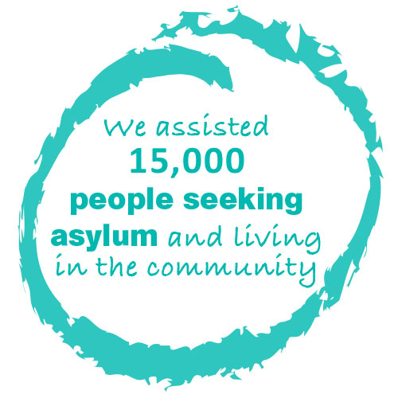

Emmanuel is planning to travel to Africa to see his family for the first time in almost 20 years after Red Cross helped his separated relatives to get back in touch. After turbulent years of fleeing war, living in a refugee camp and finally being resettled in Australia, Emmanuel says the reunion feels like being born again.
Australian Red Cross/Sarah Landro
People impacted by migration are some of the most vulnerable people in Australia today — often isolated and facing an uncertain future. We help them access support and services that let them live safe, dignified and healthy lives, regardless of where they’ve come from or how they arrived in Australia.
We support people seeking asylum, refugees, people affected by trafficking and forced marriage, those held in immigration detention, and people wanting to reconnect with, or know the fate of separated family members. We aim to improve their wellbeing, connect them with their communities and ensure they have what they need to rebuild their lives.
Advocacy, education and collaboration
We believe that when people are well informed, we can create an even stronger, more compassionate community. We’ve been working to inform community attitudes and government policy based on the humanitarian needs of migrants. We work directly with authorities, providing confidential reports and recommendations on issues of humanitarian concern and have been engaging communities through projects that include a high-profile campaign and a community and school education program to share the facts about why people seek protection.
Internationally, we’ve been building our global capacity to support vulnerable migrants by collaborating with our Red Cross Red Crescent Movement partners and co-chairing the Asia-Pacific Migration Network.
We also work with our Movement partners to reconnect families separated by conflict, disaster or migration. This year we created more effective methods to do this by strengthening relationships with government and other organisations, and investigating new ways to identify missing people.
Humanitarian support for the most vulnerable
We’ve continued monitoring conditions in immigration facilities and looking out for the welfare of people in detention, and fulfilled our commitment to visit every Australian facility every quarter.
We also visited offshore centres in Nauru and Papua New Guinea through our work with the International Committee of the Red Cross.
As with previous years, we’ve continued supporting people seeking protection by providing care in the community and emergency relief to those in need across all states and territories. An independent evaluation of our casework model recently commended our robust approach to working with vulnerable people seeking asylum.
In 2015, we commenced a new contract with the Department of Immigration and Border Protection for providing services to asylum seekers in the community. We experienced a reduction in the number of clients Red Cross could work with resulting from changes to the government approach, and consequently, a significant decrease in our staff numbers. However, we successfully implemented new processes and innovative systems during this challenging time, including the opening of Red Cross ‘hubs’ – information and support centres that clients can visit in person to access the services they need. We are especially proud of the care our volunteers and staff demonstrated towards both clients and colleagues during this difficult transition.
